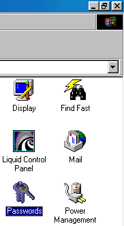
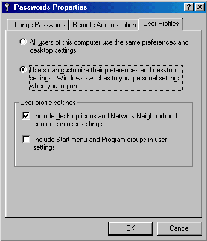

|
- To Begin Setting Up User Profiles Click On The Start Bar
- Select Settings
- Select Control Panel
|
|  |
- Select The Passwords Option And Double Click
|
|  |
- Click On The User Profiles Tab
- Enable Personal Profiles
- It Is Recomended To Enable Desktop And Network Neighborhood Settings And Not Start Bar Settings
- Once You Have Settup The System Click Ok And Reboot The Computer
|